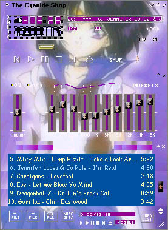
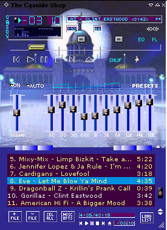
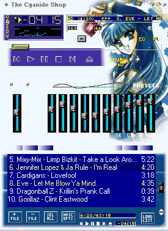

Since some of ya’ll seem to like old internet stuff, I figured I’d share these. I found an old backup from an ancient harddrive with old website data and screenshots of things I’d made circa 2000~2001. These are some Winamp skins that I made with a program called The Cyanide Shop. Was very cool at the time haha. XD (I was like 13~14, okay? lmfao) I took screenshots of them back then to post as “freebies” on one of my first websites to share with friends and fellow anime fans that liked Winamp. No idea if the actual skins are anywhere on here.
I know I had a bunch more besides these, but this was the only remaining images I can seem to find;; Among them were a dozen or so Gundam Wing and DBZ skins as well. If I can get those to work for a shot, I’ll post ‘em. :’)
Tagging some people that I know who post/reblog some old internet stuff. :) Not sure if this is up your alley or not, but I saw some of you guys post similar content. Gonna be posting a lot of ancient trash after this. xD
@oldfandomrelics @everything2000s @pandaz-x @r3l04dz @dialup2002 @web-nct @devotedlyspookysandwich
This is sick as hell, I love the fuck out of this! I was both a huge anime fan and a Winamp user back in the day, this would’ve been right up my alley, lol. Thank you so much for sharing, this is seriously legit!